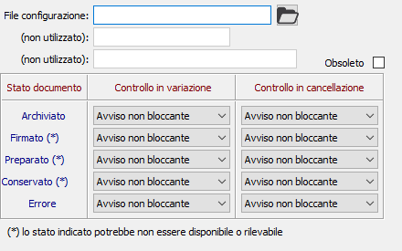

La procedura consente di configurare le varie tipologie di documenti per cui si desidera effettuare l'archiviazione e per ogni tipologia di documento configurato di specificare i controlli da applicare in base allo stato di archiviazione. L'archiviazione necessita della presenza di una procedura esterna che si occupa della memorizzazione effettiva dei documenti archiviati.

FILE CONFIGURAZIONE: indicare il file di configurazione da utilizzare per associarlo al tipo documento indicato nel campo sottostante; il pulsante consente di selezionare il file direttamente dal disco. I file di configurazione sono presenti nella cartella Modelli\Archiviazione dell'installazione di OS1.
TIPO DOCUMENTO: indicare una sigla identificativa a cui sarà associato il file di configurazione; la compilazione del campo è a cura dell'utente.
NOME DATABASE: indicare il nome del database dove sono memorizzati i documenti e relativo alla procedura di archiviazione.
CONTROLLI: i controlli consentono di specificare avvisi bloccanti o non bloccanti in relazione allo stato di archiviazione del documento/movimento (archiviato, firmato ecc.), suddividendo il comportamento tra variazione e cancellazione. E' possibile specificare nessun controllo, un avviso non bloccante che comunque consenta la prosecuzione dell'operazione oppure un avviso bloccante che interrompe l'operazione in corso.